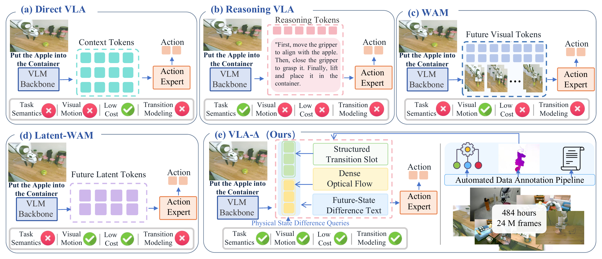
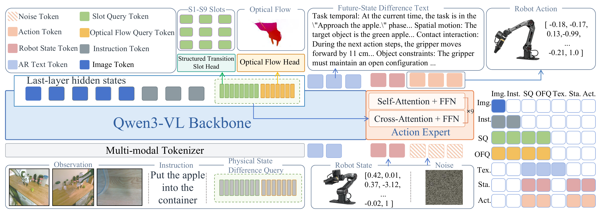
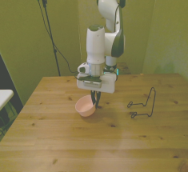
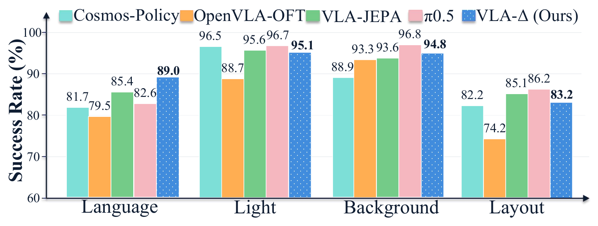

Structured Transition Slots
Nine categories of task-relevant state variables and their changes provide direct supervision for learning physically meaningful transition representations.
Multilevel Physical State Transition Learning
Learning how the world should change helps robots learn how to act.
01 · Introduction
VLAs may close the gripper before reaching the target object, or continue toward the placement location after a failed grasp. These failures suggest that a policy may replay a memorized trajectory rather than respond to the evolving scene. Most VLAs lack explicit supervision of intermediate physical state changes. VLA-Δ uses these changes as explicit learning targets, combining task semantics and visual motion to learn how the robot and its environment should change as the task progresses.

Models task semantics and visual motion changes for continuous action generation.
Multilevel physical state-transition annotations from ≈484 hours and 24 million frames of robot demonstrations.
Outperforms compared methods on LIBERO and RoboTwin, and π0.5 in real-robot experiments.
02 · Method
Physical State Difference Queries organize vision-language information into a physical state-transition representation. The action expert combines this representation with the independently encoded robot proprioceptive state to predict a continuous action chunk via flow matching.

Nine categories of task-relevant state variables and their changes provide direct supervision for learning physically meaningful transition representations.
Dense two-dimensional displacements between current and subsequent observations from the same viewpoint encourage Queries to preserve local motion details.
Coherent natural language describes task progress, spatial changes, contact transitions and associated constraints, relating local state changes to overall task progression.
Task: load the bowl


Task_temporal The overall task is "load the bowl". At the current time, the task is in the "Carry the bowl toward the loading area." phase, with the total task progress at 0.42. The next subgoal is "Align the bowl with the loading area." The next total task progress is 0.50. Spatial_motion The target object is the pink bowl. At the current time, the pink bowl is visible in the center horizontal and lower-middle vertical band, with normalized bounding box [0.388, 0.550, 0.505, 0.685]. The gripper is to the right and above of the pink bowl, with normalized bounding box [0.402, 0.415, 0.615, 0.633]. At the next time, the pink bowl is visible in the center horizontal and middle vertical band, with normalized bounding box [0.527, 0.463, 0.645, 0.602]. The gripper is to the right and above of the pink bowl, with normalized bounding box [0.519, 0.157, 0.822, 0.427]. Contact_interaction During the next action steps, the gripper remains closed; the gripper moves right 8 cm. The gripper maintain contact with the pink bowl in this phase. The gripper maintains a closed grasp on the bowl's rim, lifting it from the table surface and moving it laterally toward the wire rack structure. The task-relevant affordance is the bowl_rim_grasp_region [0.458, 0.615] [0.492, 0.615] of the pink bowl. The detected object-state change for the pink bowl is from resting on table surface to suspended in mid-air during this phase. Object_constraints The gripper must maintain a secure closed grip on the bowl rim to prevent dropping during the transport and alignment maneuver. The bowl must remain stable within the gripper's grasp and not tilt excessively while being moved toward the target area.
DROID, MolmoAct and RH20T demonstrations are standardized in LeRobot v3, annotated for current–future state pairs, and assessed through automated checks, model review and manual audits.
03 · Experiments
The four suites assess spatial understanding, object manipulation, goal-conditioned task completion and long-horizon execution. VLA-Δ achieves an average success rate of 98.4%, the highest among all compared methods.
| Methods | VLM Size | Spatial | Object | Goal | Long | Average |
|---|---|---|---|---|---|---|
| π0.5 | 3B | 98.8 | 98.2 | 98.0 | 92.4 | 96.9 |
| GR00T-N1.7 | 2B | 97.7 | 97.5 | 98.5 | 94.4 | 97.0 |
| openVLA-OFT | 7B | 97.6 | 98.4 | 97.9 | 94.6 | 97.1 |
| VLA-Adapter | 0.5B | 97.8 | 99.2 | 97.2 | 95.0 | 97.3 |
| ZR-0 | 2B | 97.4 | 99.4 | 97.8 | 96.4 | 97.8 |
| VLA-Δ | 2B | 98.8 | 99.8 | 98.6 | 96.4 | 98.4 |
Clean uses relatively fixed scene appearances and object layouts. Random varies object instances, initial positions, lighting, backgrounds, tabletop layouts and instruction phrasing.
| Method | Clean | Random |
|---|---|---|
| X-VLA | 72.88 | 72.84 |
| π0 | 65.92 | 58.4 |
| π0.5 | 82.74 | 76.76 |
| Motus | 88.52 | 87.02 |
| ZR-0 | 88.70 | 87.98 |
| VLA-Δ | 90.06 | 89.74 |
89.0% under the Language perturbation, outperforming π0.5 at 82.6% by 6.4 percentage points.
Across the remaining perturbation settings, VLA-Δ remains competitive with leading methods.
50 episodes/task/perturbation · 8,000 episodes total.

The complete VLA-Δ model combines all three supervision types, achieving an average success rate of 98.40%. Future-State Difference Text, Structured Transition Slots and Dense Optical Flow each improve over Difference Queries Only with action-only pretraining (96.45%). All variants use only the action-learning objective during downstream fine-tuning.
| Variant | Query | Pretraining | Difference Text | Slots | Optical Flow | LIBERO Avg. (%) |
|---|---|---|---|---|---|---|
| Dense VLM Features | No | No | No | No | No | 95.70 |
| Dense VLM Features | No | Yes | No | No | No | 95.85 |
| Difference Queries Only | Yes | No | No | No | No | 96.25 |
| Difference Queries Only | Yes | Yes | No | No | No | 96.45 |
| Query + Difference Text | Yes | Yes | Yes | No | No | 97.20 |
| Query + Structured Slots | Yes | Yes | No | Yes | No | 96.90 |
| Query + Optical Flow | Yes | Yes | No | No | Yes | 97.35 |
| VLA-Δ (Full) | Yes | Yes | Yes | Yes | Yes | 98.40 |
04 · Experiments
Five manipulation tasks evaluate obstacle avoidance, long-horizon execution, fine-grained manipulation, spatial reasoning and generalization under environmental changes.
Videos loop automatically. Hover to enlarge and pause scrolling; swipe to browse.
Place the carrots on a rack, making sure they do not touch the cups.
Put all the items on the tabletop onto the tray.
Put the spoon into the cup.
Place the item closest to the bowl onto the plate.
Place the item closest to the bowl onto the plate with a changed tablecloth.
05 · Citation
Title and authors are confirmed. Year, publication venue and public identifier will be added when available.
@misc{vla_delta,
title = {VLA-{$\Delta$}: Learning Physical State Transition for Vision-Language-Action Models},
author = {Lu, Qi and Li, Jiarun and Zhang, Ce and Pan, Miao and Pan, Yi and Wang, Xu and Zhang, Wenqi and Zhang, Xuhong},
note = {Manuscript}
}